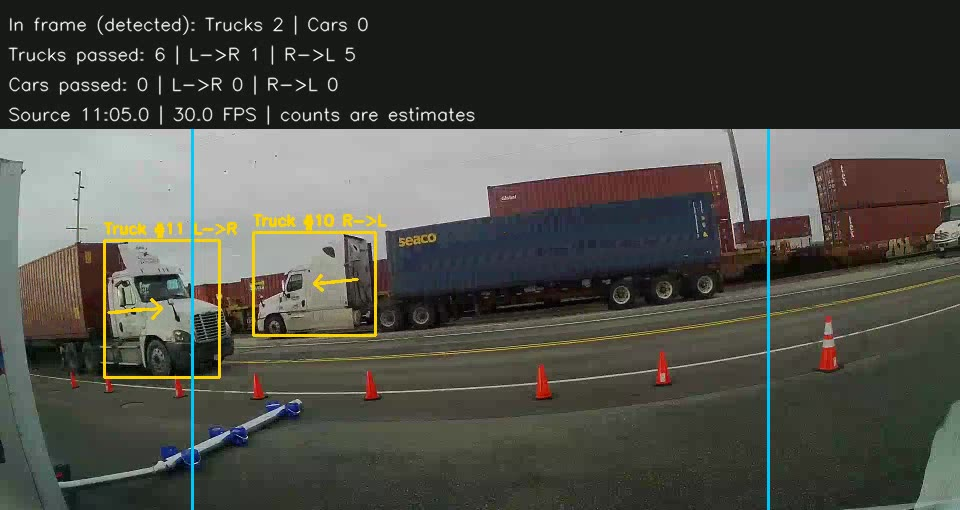

Projects / Roadside Vehicle Tracker
Roadside Vehicle Tracker
Fine-tuned YOLO for matching vehicles to exhaust plumes
- Year
- 2026
- Context
- Side project · supporting UBC plume research
- Tools
- Python · YOLO · Computer vision

A vehicle detector and tracker for roadside video, built on Ultralytics YOLO with my own fine-tuned model, that logs vehicle passes so they can be matched to measured exhaust plumes.
What it does
Detects and tracks trucks and cars in roadside video and outputs time-stamped vehicle passes. A UBC researcher matches those passes against plume measurements to attribute emissions to individual vehicles.
How it counts
Each detected vehicle gets a track ID. Two counting lines across the road record when a track crosses them and in which direction, so the output separates trucks from cars and left-to-right from right-to-left traffic, with a timestamp for every pass.
Status
In progress.